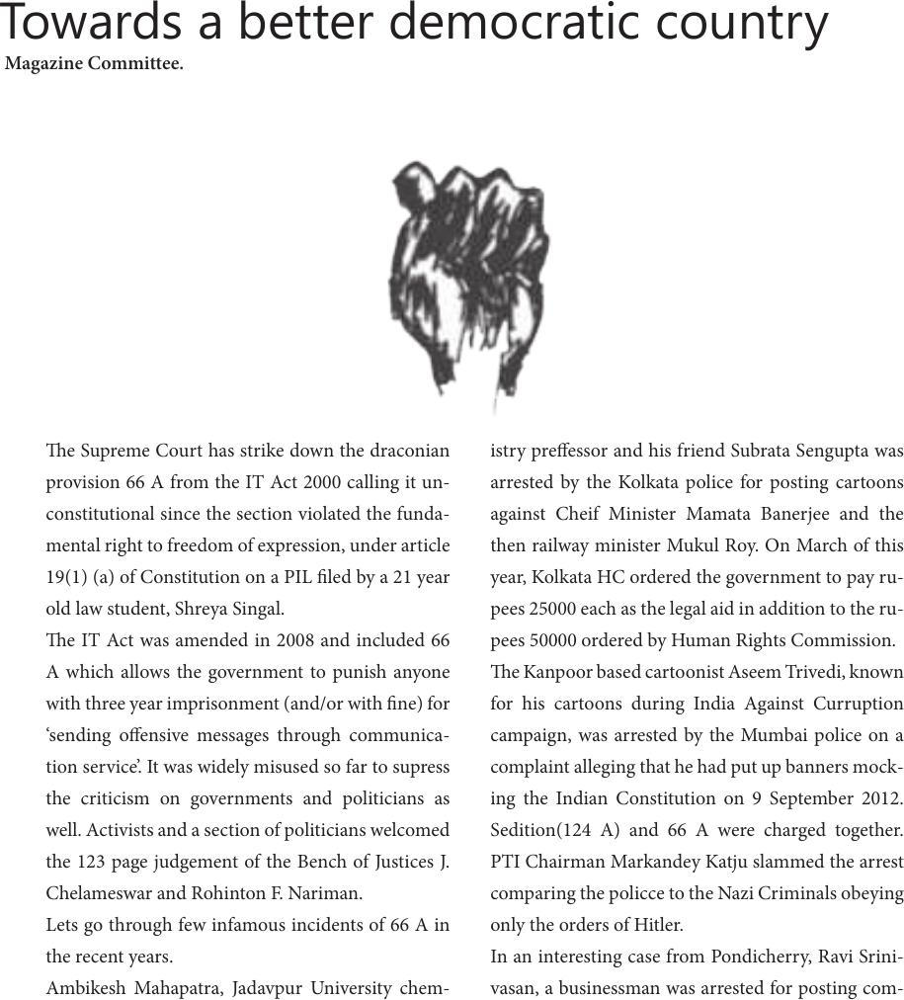

Towards a better democratic country
e Supreme Court has strike down the draconian
provision 66 A from the IT Act 2000 calling it un-
constitutional since the section violated the funda-
mental right to freedom of expression, under article
19(1) (a) of Constitution on a PIL led by a 21 year
old law student, Shreya Singal.
e IT Act was amended in 2008 and included 66
A which allows the government to punish anyone
with three year imprisonment (and/or with ne) for
‘sending oensive messages through communica-
tion service’. It was widely misused so far to supress
the criticism on governments and politicians as
well. Activists and a section of politicians welcomed
the 123 page judgement of the Bench of Justices J.
Chelameswar and Rohinton F. Nariman.
Lets go through few infamous incidents of 66 A in
the recent years.
Ambikesh Mahapatra, Jadavpur University chem-
istry preessor and his friend Subrata Sengupta was
arrested by the Kolkata police for posting cartoons
against Cheif Minister Mamata Banerjee and the
then railway minister Mukul Roy. On March of this
year, Kolkata HC ordered the government to pay ru-
pees 25000 each as the legal aid in addition to the ru-
pees 50000 ordered by Human Rights Commission.
e Kanpoor based cartoonist Aseem Trivedi, known
for his cartoons during India Against Curruption
campaign, was arrested by the Mumbai police on a
complaint alleging that he had put up banners mock-
ing the Indian Constitution on 9 September 2012.
Sedition(124 A) and 66 A were charged together.
PTI Chairman Markandey Katju slammed the arrest
comparing the policce to the Nazi Criminals obeying
only the orders of Hitler.
In an interesting case from Pondicherry, Ravi Srini-
vasan, a businessman was arrested for posting com-
Magazine Committee.